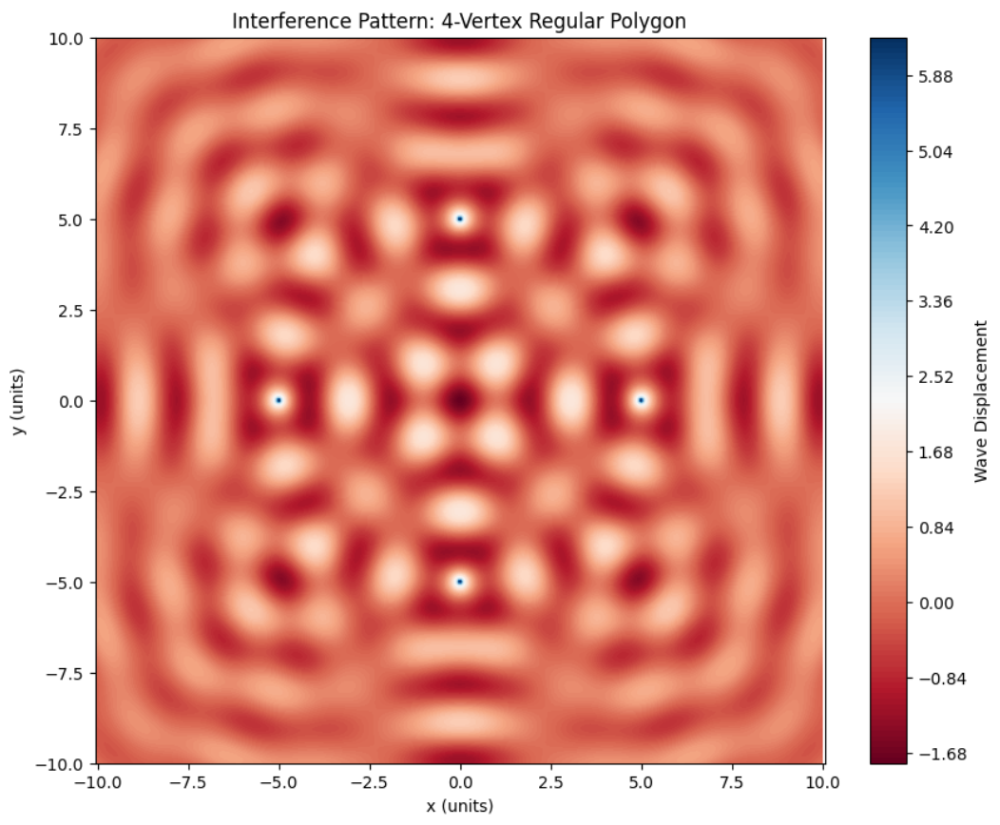

Interference Patterns on a Water Surface
Motivation
Wave interference is a fundamental phenomenon where two or more waves overlap in space, leading to a new wave pattern. On a water surface, this is elegantly demonstrated when ripples from different points meet. Their superposition produces a pattern of reinforcement (constructive interference) and cancellation (destructive interference). These patterns not only provide visual insight into the physics of waves but also model various real-world phenomena including sound, light, and radio wave interactions.
This project aims to visualize interference using wave sources placed at the vertices of a regular polygon. The symmetry and spacing of these sources produce rich interference patterns.
Theoretical Background
Single Point Source Wave
The displacement \((\eta(x, y, t)\)) on the surface of the water from a point source at position \(((x_0, y_0)\)) is modeled by:
Where: - \((A\)): Amplitude of the wave - \((r = \sqrt{(x - x_0)^2 + (y - y_0)^2}\)): Distance from source to point \(((x, y)\)) - \((k = \frac{2\pi}{\lambda}\)): Wave number - \((\lambda\)): Wavelength - \((\omega = 2\pi f\)): Angular frequency - \((f\)): Frequency - \((\phi\)): Initial phase - \((t\)): Time
Superposition Principle
With multiple coherent sources emitting waves of equal frequency and amplitude, the net displacement is the sum of all individual displacements:
Where \((N\)) is the number of wave sources.
Simulation Setup
1. Define Parameters
- Number of sources \((N\)): Vertices of the polygon
- Radius \((R\)): Distance from polygon center to each source
- Grid size: Area of simulation in the \((xy\))-plane
2. Create Wave Sources
- Sources are placed symmetrically around the origin using trigonometric functions.
3. Calculate Wave Contributions
- Use the distance formula for \((r\))
- Sum all contributions to get \((\eta_{sum}\))
4. Visualization
- Use contour plots to show high and low displacement regions
Python Code
import numpy as np
import matplotlib.pyplot as plt
# === Wave Parameters ===
A = 1.0 # Amplitude
wavelength = 2.0 # Wavelength (lambda)
f = 1.0 # Frequency (Hz)
omega = 2 * np.pi * f
k = 2 * np.pi / wavelength
phi = 0 # Initial phase
t = 0.0 # Snapshot at t seconds
# === Polygon Configuration ===
N = 4 # Number of sources (3=triangle, 4=square, etc.)
R = 5.0 # Radius from center to vertex
# === Grid Setup ===
x = np.linspace(-10, 10, 500)
y = np.linspace(-10, 10, 500)
X, Y = np.meshgrid(x, y)
# === Source Coordinates ===
sources = []
for i in range(N):
angle = 2 * np.pi * i / N
x0 = R * np.cos(angle)
y0 = R * np.sin(angle)
sources.append((x0, y0))
# === Wave Superposition ===
eta_sum = np.zeros_like(X)
for (x0, y0) in sources:
r = np.sqrt((X - x0)**2 + (Y - y0)**2)
eta = A / np.sqrt(r + 1e-6) * np.cos(k * r - omega * t + phi)
eta_sum += eta
# === Plotting ===
plt.figure(figsize=(10, 8))
contour = plt.contourf(X, Y, eta_sum, levels=150, cmap='RdBu')
plt.colorbar(contour, label='Wave Displacement')
plt.title(f"Interference Pattern: {N}-Vertex Regular Polygon")
plt.xlabel('x (units)')
plt.ylabel('y (units)')
plt.axis('equal')
plt.grid(False)
plt.show()

Observations and Analysis
Constructive Interference
- Occurs at points where waves from all sources arrive in phase.
- Results in amplified displacement.
Destructive Interference
- Occurs at points where waves arrive out of phase.
- Results in cancellation or reduced displacement.
Symmetry and Patterns
- The rotational symmetry of the polygon is reflected in the interference pattern.
- As \((N\)) increases, the pattern becomes more circular and complex.
Possible Extensions
- Animation over time to show wave propagation
- Different phase shifts between sources
- Changing polygon types: triangle (N=3), pentagon (N=5), hexagon (N=6)
- Interactive UI using sliders for real-time parameter adjustment (with Jupyter widgets or Streamlit)
Conclusion
This simulation visually demonstrates how regular spatial arrangements of coherent wave sources lead to predictable and beautiful interference patterns. The combination of theory and Python simulation provides a hands-on approach to mastering wave behavior and superposition.